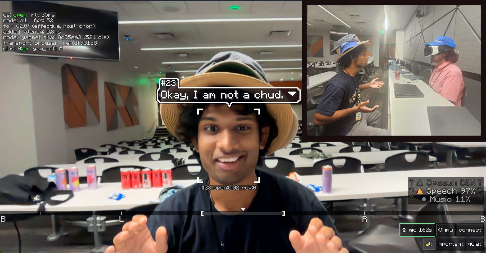

A cap with four microphones. It hears the room close to your ears, tells you what a sound was, how urgent it is, and which way it came from — and it uses the phone already in your pocket as the display. Built for d/Deaf and hard-of-hearing wearers, who otherwise miss the signals a room gives everyone else.

df931b8: a caption bubble anchored to the speaker's face, the bearing
compass along the bottom (B · L · R · B), class confidences at the right, and the
diagnostics chip — ws: open, rtt: 35 ms, fps: 52,
added latency: 0.3 ms, yamnet 521 cls, transport: browser.
Inset: the cap on a wearer, with a second person watching the same feed.
Your phone has one microphone. It can tell you that a sound happened — it cannot tell you where it came from, because one microphone has no way to compare arrival times. Put the microphones on the wearer's head instead and a bearing means something you already understand: to my left, behind me.
On-screen events get a bearing marker on the phone's camera view. Off-camera events get the cap's own four-mic quadrant — which side, no camera required.
YAMNet classifies the event — doorbell, knock, alarm, glass, car horn, dog, speech — with the confidence and the error bar shown, not hidden.
Urgency tiers: an alarm or siren takes the whole screen and suppresses everything else. Everything
below that is yours to filter — important or quiet.
No headset, no AR glasses, no extra hardware to buy. The cap is the sensor; the phone is the screen, and it stays in the case when you don't need it.
A line array is front/back ambiguous. A four-mic bar cannot tell a sound in front from a sound behind, so the system reports both mirrored candidates or lets the camera resolve the tie — it never silently picks a half-space. And when nothing can localize a sound, the event still arrives with its class, flagged as unlocalized, and the marker fades out instead of pointing somewhere false.
| What | Result | How |
|---|---|---|
| Sound → screen latency | p50 378 ms onset→client | tools/latency_bench.py |
| Classification | 5.65 ms per 0.975 s window | python -m server.classify |
| Direction on synthetic audio | ±1.7° laptop pair · ±6.0° synthetic 240 mm hat geometry | python -m server.selftest --only doa |
| Packet path | 150/150 packets, 50 pps/ch, 0 sequence gaps | python tools/udp_sniff.py --selftest |
| Classifier sanity | sine → Sine wave 0.996 · noise → Static 0.738 · speech 0.97–0.98 | python -m server.classify |
Every number has a log and a command in the repository. The live-TDOA accuracy claimed above is from the self-test — the dev laptop's own mic pair has no inter-channel baseline, so its coherence gate correctly refuses to report an angle rather than invent one.
Three processes on one network — a laptop, a phone, and the cap. The website's microphone is the default sensor, so it runs before the hardware is even switched on.
# backend (Python, model files are committed)
uv venv .venv && uv pip install -r requirements.txt
tools/run_backend.sh --profile browser_mono --source browser
# HUD (Vite + TypeScript) — localhost is a secure context, so the camera works
cd web && npm install && npm run dev # → http://localhost:5173
# cap (Arduino IDE, ESP32-S3 board package) — flash esp32/hackgt_hat/hackgt_hat.ino